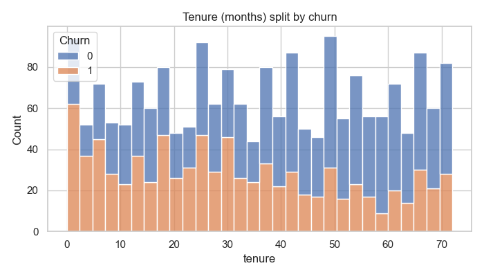
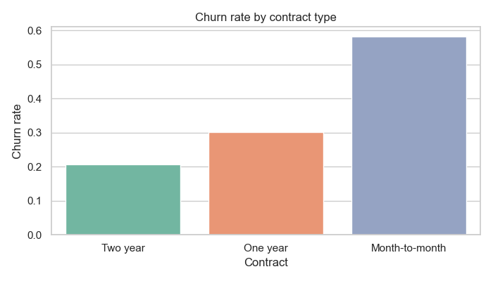
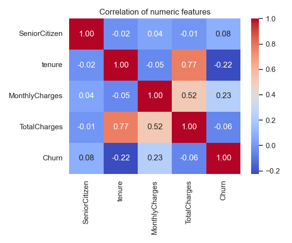

Python
Python Pandas
Pandas NumPy
NumPy scikit-learn
scikit-learnGoal
Predict customers at risk of churning before they leave, so retention teams can intervene with the right offer at the right time.
An end-to-end machine learning pipeline that predicts which telecom customers are likely to leave, surfacing the key drivers of churn and translating them into actionable retention strategies.
Predict customers at risk of churning before they leave, so retention teams can intervene with the right offer at the right time.
2,000 customers · 16 features. Synthetic Telco-style data covering demographics, contracts, services, and billing.
Logistic Regression as an interpretable baseline, and Random Forest to capture non-linear feature interactions.
82% accuracy with Random Forest on the held-out test set, with the strongest signals coming from contract type and tenure.
Read the customer CSV into a pandas DataFrame.
Fix types, drop missing rows, encode the target.
Visualize distributions, correlations, and class balance.
Tenure buckets, average spend, one-hot encoding.
Stratified 80/20 split, scaled features, fit both.
Accuracy, precision, recall, F1, confusion matrix.
Score new customers and rank by churn probability.
Churn is concentrated in the first 10 months. The longer someone stays, the more likely they keep staying, so the first year is where retention efforts pay off the most.

Contract type is the single most predictive feature. Month-to-month customers churn at ~58%, vs. just 21% on two-year deals. Pushing customers into longer commitments has the largest single impact on retention.

Customers with higher bills are more likely to leave. Pricing, perceived value, and bill-shock all matter, especially when paired with short tenure on a flexible contract.

Both models were trained on the same engineered feature matrix and scored on a held-out 20% test set. Random Forest captured non-linear interactions between contract, tenure, and spend, winning on every headline metric.
A linear, interpretable starting point that scales well and explains coefficients clearly.
An ensemble of decision trees that captures interactions linear models miss. The right fit for tabular customer data.
“Missing a churner costs more than flagging a loyal customer.”
In retention, the asymmetry of error matters. A false alarm (flagging a happy customer for outreach) costs a small discount or a check-in call. A missed churner costs the full lifetime value of that account, plus the cost of acquiring a replacement.
That's why the Random Forest's 74% recall on the churn class is the headline metric, not raw accuracy. It means we catch nearly three out of every four customers about to leave, early enough for the retention team to act.
The full notebook, dataset generator, and outputs are on GitHub.